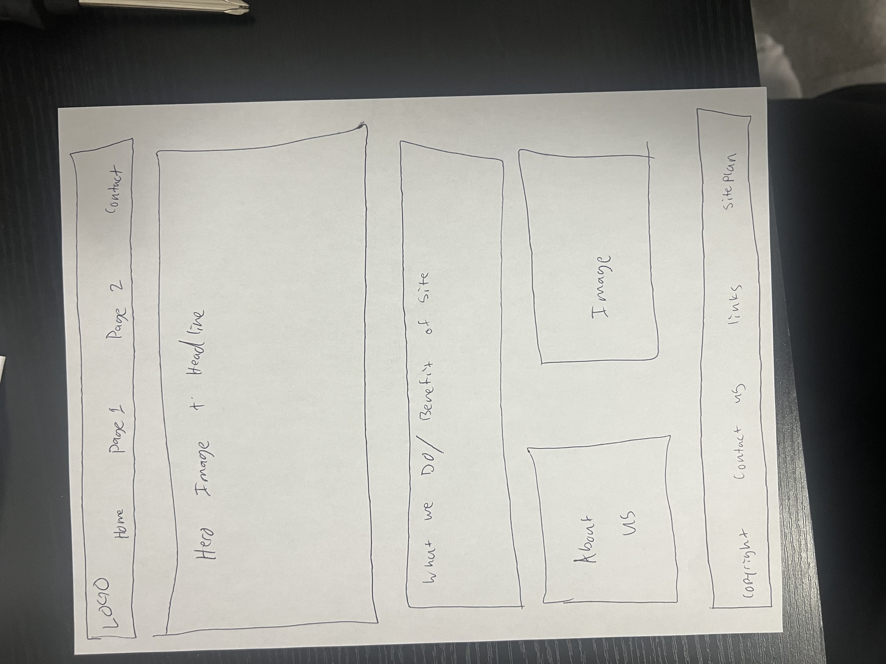
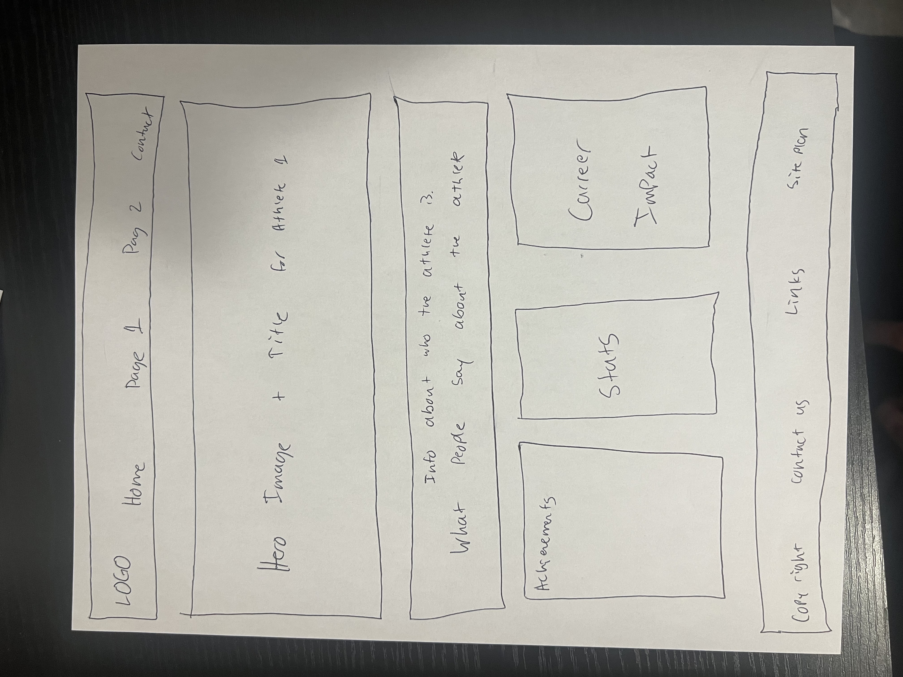
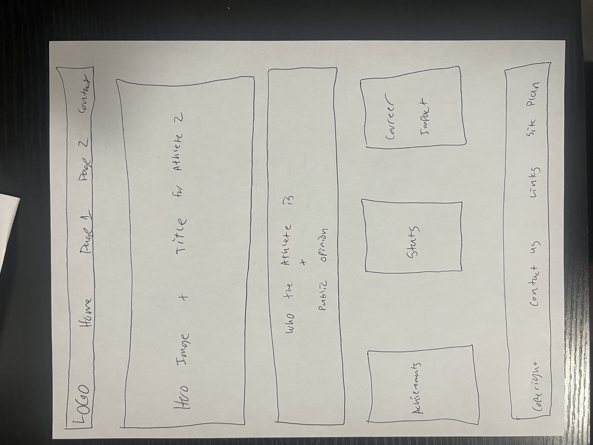

Overview
Site Name
Athlete Compare
Purpose
Athlete Compare is a simple comparison website designed to help sports fans better understand and
compare two legendary basketball players: Michael Jordan and LeBron James. The site presents
achievements, statistics, and career impact in a clear and organized format so users can form
informed opinions without relying on bias or heated debate.
Audience
The intended audience includes sports fans, students, and casual basketball viewers ranging from
teens to adults. The site is designed for users who want clear explanations and easy-to-read
comparisons without overwhelming data or advanced analytics.
Elevator Pitch
Athlete Compare gives fans a clean and visual way to compare Michael Jordan and LeBron James.
By organizing achievements, stats, and career impact side-by-side, the site makes one of the
greatest sports debates easier to understand.
Content
Home Page (index.html)
The home page introduces the purpose of Athlete Compare and explains why Michael Jordan and
LeBron James are often debated as the greatest basketball players of all time. It provides an
overview of how the site works and guides users to select an athlete to explore further.
This page will include a hero image with a headline, a short explanation of the site’s goal,
and links to both athlete subpages.
Michael Jordan Page (jordan.html)
The Michael Jordan page focuses on Jordan’s career and legacy. It includes a brief biography,
public perception, and three main content sections: achievements, key statistics, and career impact.
This page helps users understand why Jordan is widely considered one of the greatest athletes
in sports history.
LeBron James Page (lebron.html)
The LeBron James page highlights LeBron’s career accomplishments, versatility, and longevity.
Like the Jordan page, it contains sections for achievements, statistics, and overall career impact.
This page allows users to see how LeBron compares to Jordan across different eras of basketball.
Wireframes
Home Page Wireframe
The home page wireframe includes the header navigation, hero image and headline, a brief description
of the site, and links to both athlete pages.

Michael Jordan Page Wireframe
This wireframe shows the layout for the Michael Jordan page, including a hero image, introduction,
and three sections for achievements, statistics, and career impact.

LeBron James Page Wireframe
This wireframe shows the layout for the LeBron James page, mirroring the Jordan page for consistency
while highlighting LeBron’s unique career information.
